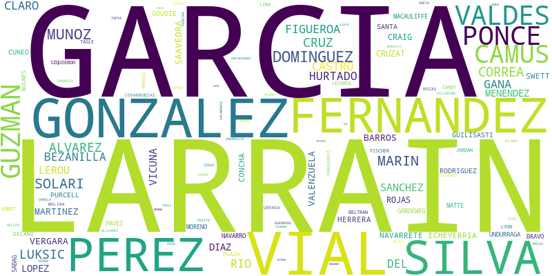

Apellidos de los directivos de empresas Chilenas
Grafo de empresas y los apellidos de los directivos que han tenido
El ancho de las aristas indica la cantidad de veces que un apellido ha aparecido en algún directivo de una empresa.
